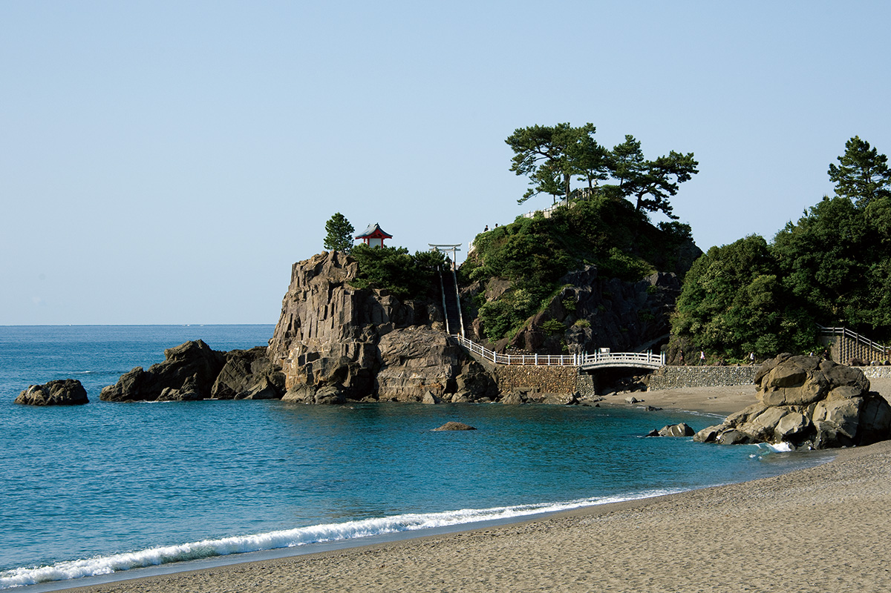
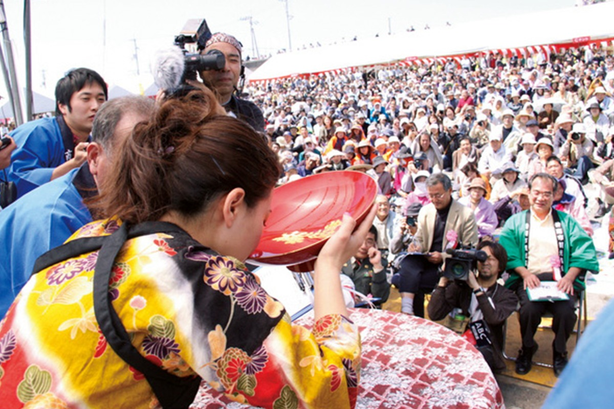
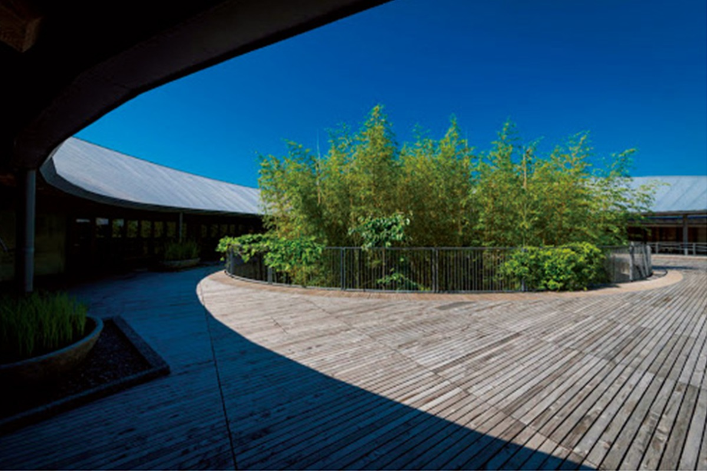
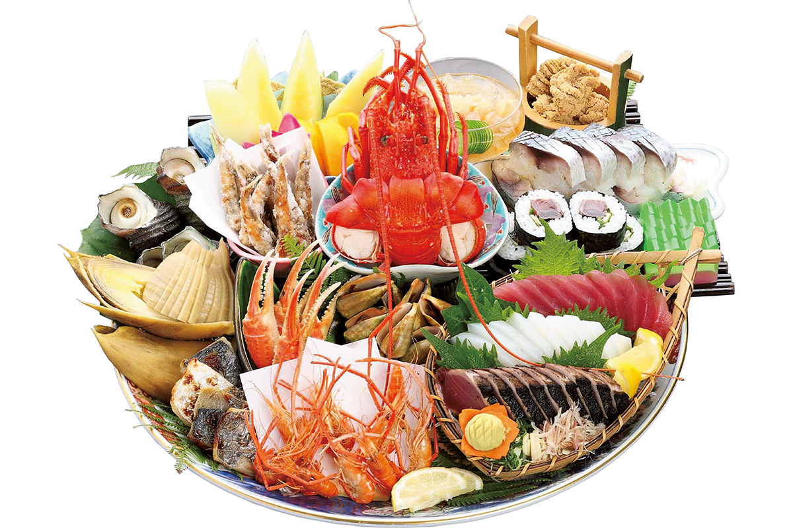
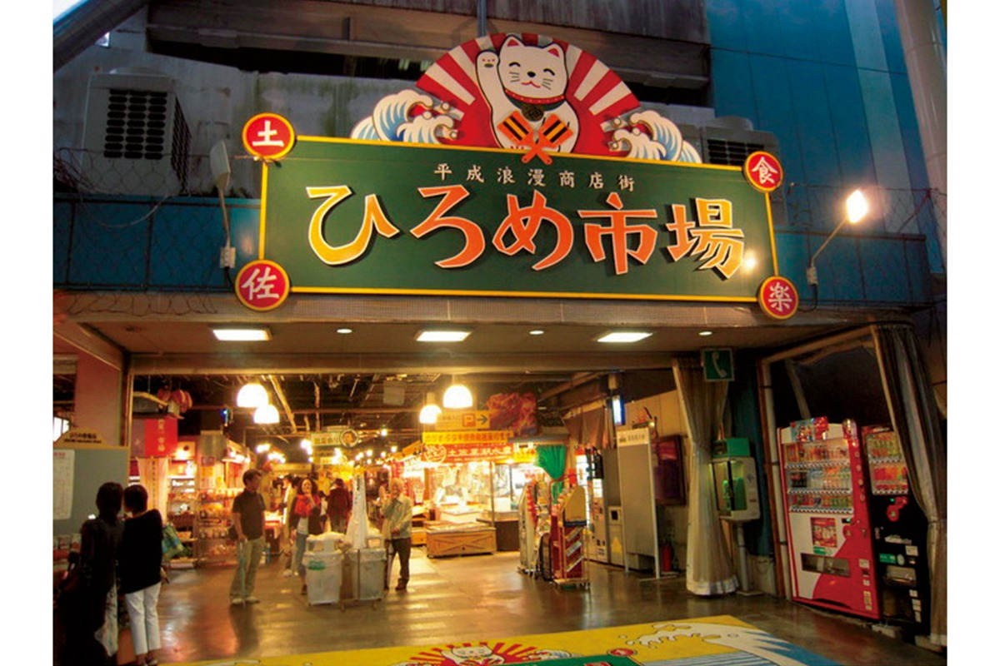
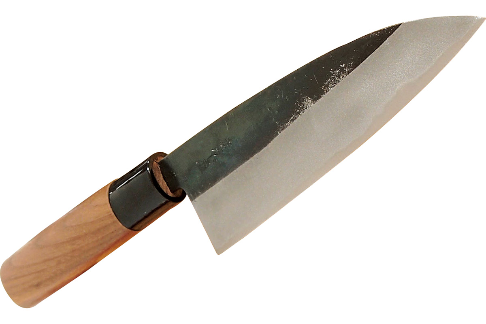
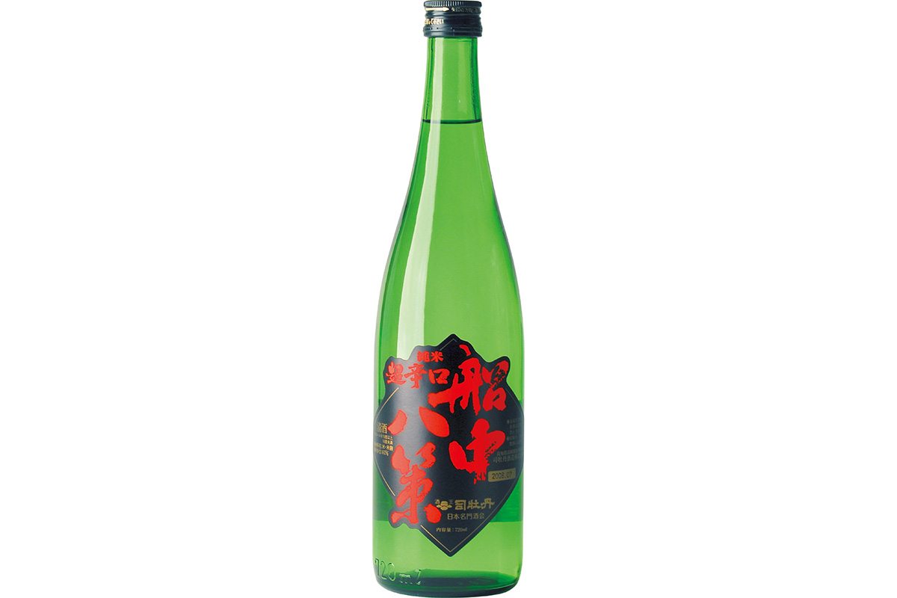
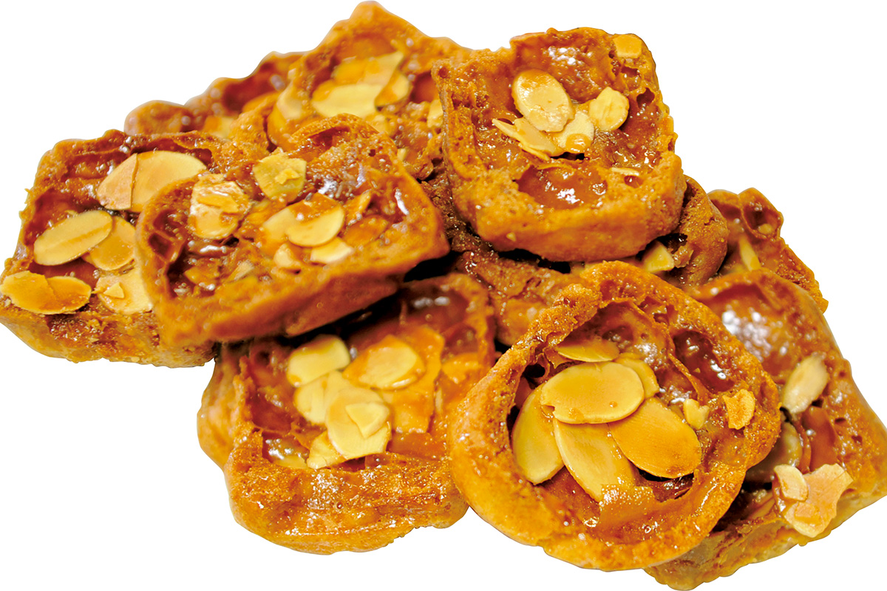

Префектура Коти
Коти: мыс со статуей Рёмы, чистая река и тунец на открытом огне

Бирюзовые волны выходят на песчаный берег, справа над водой поднимается скалистый мыс с соснами.
Префектура, где четыре пятых территории занимает лес, а реки остаются самыми чистыми в стране. Здесь пьют сакэ из огромной чаши на весеннем празднике и жарят тунца при почти открытом огне. Разбираем, за чем ехать в Коти: от клинка кузнецов Тоса до рынка-деревни в центре города.
О префектуре
Земля, откуда началась современная Япония
Юг префектуры смотрит на Тихий океан, север занимает хребет Сикоку, и потому земля вытянута с запада на восток. Кроме равнины Котё в центре и района города Симанто на западе почти всюду к дороге подступают горы, и страна здесь горная.
Реки, впадающие в залив Тоса, славятся чистотой: река Симанто считается последней чистой рекой Японии, а река Ёдо уступает в стране лишь единицам по уровню использования воды.
В эпоху Нара и Хэйан в городе Нанкоку стояло управление области, и его прославила «Дневник Тоса», написанный Ки-но Цураюки. В эпоху Сэнгоку земли объединил род Тёсокабэ, а после битвы при Сэкигахаре и до самой революции Мэйдзи областью Тоса правил род Ямаути.
Здешняя кухня известна потреблением тунца, а из местных продуктов особенно ценят угря из реки Симанто. Климат тёплый круглый год, поэтому здесь растят овощи и фрукты в теплицах, а также рис и сакэ на воде горных рек.
Что посмотреть
Пляж, где стоит герой эпохи
Берег Кацурахама
Дуга берега растянулась между мысом Рюту и мысом Рюо, а место упоминается в песне «Ёсакои-буси». У пляжа стоит бронзовая статуя Сакамото Рёма, человека, во многом определившего начало современной Японии, и это одна из главных точек префектуры.
- Справки
- отдел туризма города Коти
- Телефон
- +81 88-823-9457
Что ещё посмотреть
- Река Ёдо, прозрачная вода и камни в русле
- Пещера Рюгадо, пещера с подземными залами
- Река Симанто, последняя чистая река страны
Праздники
Праздник, где пьют из большой чаши
Праздник доромэ
Праздник проводят каждый год в апреле, и главное угощение это свежий доромэ, только что выловленные мелкие сардины. Изюминка праздника конкурс, где участники осушают одним духом большую чашу сакэ.

- Место
- посёлок Акаока, город Конан, Коти
- Период
- ежегодно в апреле
Другие праздники
- Праздник ёсакои, танцы с барабанами на улицах
- Праздник Акиба, осенний обряд у святилища
- «Окяку» на Тосе, домашний пир в кругу родни
Музеи и архитектура
Дом ботаника в ботаническом саду
Мемориальный музей Макино Томитаро
Музей посвящён ботанику Макино Томитаро с мировым именем и стоит внутри ботанического сада. Проект сделал Наито Хироси, и темой здания стала устойчивость: оно вписано в зелень и почти растворяется среди деревьев.

- Адрес
- 4200-6 Godaisan, Kochi, Kochi
- Телефон
- +81 88-882-2601
- Сайт
- makino.or.jp
Что ещё посмотреть
- Галерея над облаками, зал высоко в горах
- Мемориальный музей Сакамото Рёма, документы и вещи героя
- Префектурный музей искусств Коти, собрание живописи и скульптуры
Местная кухня
Блюдо на блюде сорока сантиметров
Кухня сабати
Блюдо обязательно на любом застолье Тоса. На большом керамическом блюде диаметром от сорока до пятидесяти сантиметров, сделанном в Арите или Кутани, выкладывают тунца, суши и другие сезонные дары гор и моря щедро и без оглядки на аккуратность.

Что ещё попробовать
- Татаки из тунца, тунец, обожжённый снаружи, сырой внутри
- Деревенское суши, суши с овощами горных районов
- Лапша в глиняной чаше, лапша, которую подают горячей в горшочке
Где поесть
Рынок-деревня в центре города
Рынок Хиромэ
Собрание небольших закусочных в квартале Обаямати работает как одна большая столовая. Здесь подают местную кухню и блюда японской, китайской и западной традиции, а рядом стоят лавки сувениров и одежды, потому это ещё и торговый квартал для туристов.

- Адрес
- 2-3-1 Obayamachi, Kochi, Kochi
- Телефон
- +81 88-822-5287
- Часы
- 9:00-23:00, в воскресенье с 7:00
- Выходные
- примерно шесть дней в году
- Сайт
- hirome.co.jp
Ремёсла
Ножи кузнецов Тоса
Кухонный нож Тоса-утихамоно
Ремеслу четыреста лет, и местные клинки славятся и красотой, и удобством в работе. Нож делают из слоистой стали, а рукоятку подгоняют под руку так, чтобы им можно было работать долго.

- Телефон
- +81 887-52-9520
- Сайт
- utihamono.com
Что привезти
Сакэ со «сутры на борту»
Сакэ «Сэнтю хассаку» от Цукасаботы
Винокурня работает с 1603 года, а бутылку назвали в память о плане из восьми пунктов, написанном на корабле. Напиток хорош и охлаждённым, и комнатной температуры, и подогретым, бутылка объёмом 720 миллилитров стоит 1529 иен.

- Телефон
- +81 889-22-1211
Хрустящая сладость к чаю
Набор хрустящей сладости делают на солнечной соли, которая даёт вкус и мягкое ощущение во рту. Коробка из двенадцати штук стоит 1080 иен.

- Телефон
- +81 88-878-6276
- Сайт
- sweets-corp.com
Где остановиться
Отель в городке над облаками
Отель «Кумо-но уэ»
Гостиница стоит в Юсухаре, которую называют городком над облаками, и здесь можно принимать воду источника прямо из купальни. В ресторане при отеле готовят блюда из говядины и речной рыбы, и их отдельно хвалят.
- Адрес
- 3799-3 Tarokawa, Yusuhara, Takaoka, Kochi
- Телефон
- +81 889-65-1100
- Комнат
- 16
- Цена
- от 13 200 иен за ночь с двумя приёмами пищи на человека, налоги и сборы включены
Местный диалект
Как здесь говорят «очень вкусно»
- кодзян то умайочень вкусно
- игоссо:упрямый мужчина
- хатикинженщина с характером мужчины
- нантяа найничего особенного
Рекорды
В чём Коти первая
- №1 производство имбиря
- №1 производство нира
- №1 потребление тунца
Вопросы и ответы
Что ещё спрашивают о Коти
Какой горячий источник известен благодаря цитрусу?
Источник Умадзи. В посёлке Умадзи на востоке префектуры делают продукты из юдзу, главного местного цитруса, а вода источника густая по ощущению, и есть купальни для приезжающих на день.
Как называется большой флаг, который вывешивают на майский праздник?
Фурафу. В день праздника мальчиков его поднимают вместе с карпами-флагами, желая мальчику силы и здоровья. Большие полотнища достигают примерно четырёх метров в высоту и семи в ширину, и их чаще всего видно на востоке префектуры.
Справочник
Коти в цифрах
Общие сведения
| Административный центр | Коти |
| Муниципалитеты | 11 городов, 17 посёлков, 6 сёл |
| Площадь | 7104 кв. км |
| Население | 710 тысяч человек |
| Плотность населения | 99,4 человека на кв. км |
| Туристов в год | 4,41 млн |
| Дерево префектуры | кедр янасэ |
| Цветок префектуры | восковница |
| Птица префектуры | японская райская мухоловка |
Климат
| Средняя температура | +17,4 |
| Максимум | +32,8 |
| Минимум | +0,9 |
| Осадки | 3093 мм |
| Ясных дней | 42 |
| Дождливых дней | 114 |
| Снежных дней | 3 |
Для путешественника
| Онсэнов | 45 |
| Гостиниц | 88, рёканов 305 |
| Музеев искусств | 4 |
| Музеев | 10 |
| Митиноэки, придорожных станций | 24 |
| Национальное сокровище | зал Якуси храма Хораку-дзи |
| Важных культурных ценностей | 91, из них 3 национальных сокровища |
| Исторических мест | 12 |
| Живописных мест | 3 |
| Природных памятников | 28 |
| Национальные парки | Асидзу-Увакай, Цуруги-сан и ещё два |
Природные памятники
- Длиннохвостая курица Тоса, редкая порода домашней птицы
- Бабочка микадо в городе Коти, место обитания редкого вида
- Большой кедр в Суги, старое дерево у храма
- Пещера Рюгадо, пещерный памятник природы